The Swiss Wooden Stamp
Its Personality and its Limitations
On the 7th of November 2004, beside a sheet dedicated to the 150th anniversary of the "Sitting Helvetia" stamps, the Swiss Post has issued a stamp by using a less usual material, the wood. This stamp continued the effort of the Swiss PA in the diversification of materials used for stamp fabrication, like the earlier world's first embroidery stamp or the chocolate stamp.
|
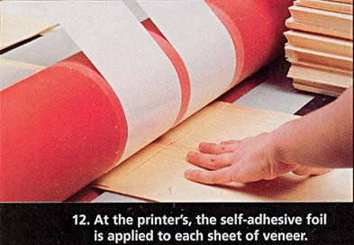 |
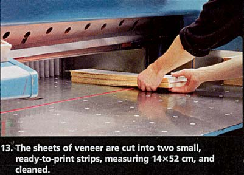 |
Out of the ordinary stamps like these are however exceptions in the issue program, specialties having an individual character. One of these is without doubts the wooden stamp, of a rather unspectacular appearance but an inspired mixing of rigor and personality.
|
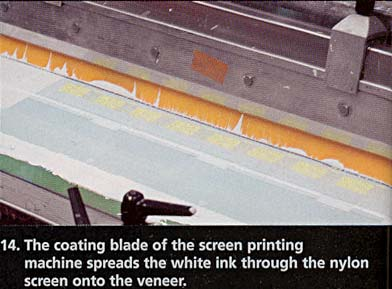 |
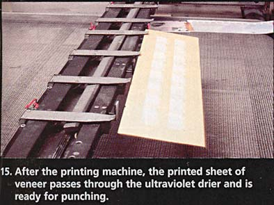 |
I show on six successive images the last part of the manufacturing process of these unusual wooden stamps. They ware made of top-quality spruce timber that came from 14 tries that grew in Switzerland.
|
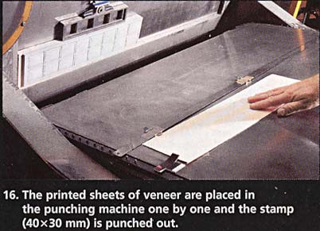 |
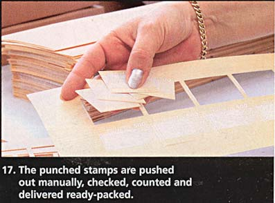 |
The trees for the veneer all had a diameter of 70 to 80 cm and were about 120 years old. The wood production took place at the Furnier- und Sägewerke Lanz AG in Rohrbach. The printing process (screen printing, in one color) happened at the Sericora AG in Köniz.
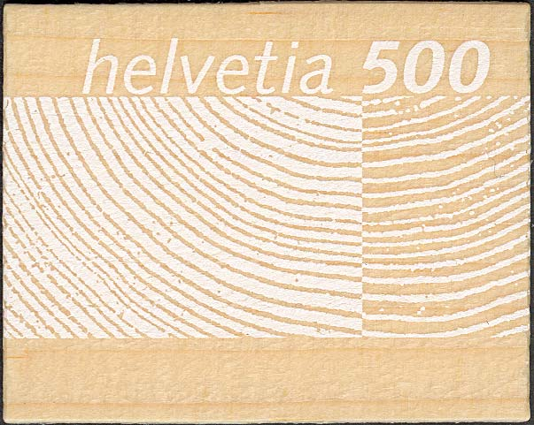
Here you can see the result of all these efforts, the Swiss wooden stamp, having a design of a great simplicity but quite appropriate for such kind of an issue.
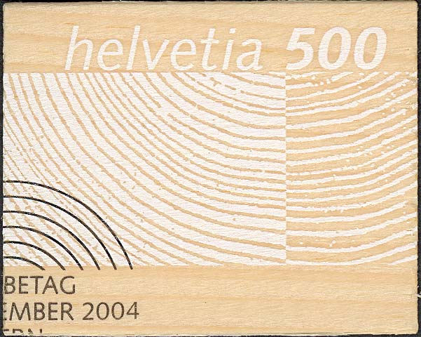
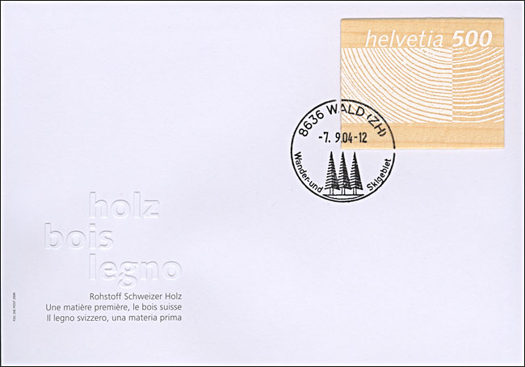
The above cover was cancelled (because I asked for it) at the PO 8636 in Wald, which means Forest in German. This was the only one of the three post offices where this stamp could be properly canceled, for reasons that I explain below.
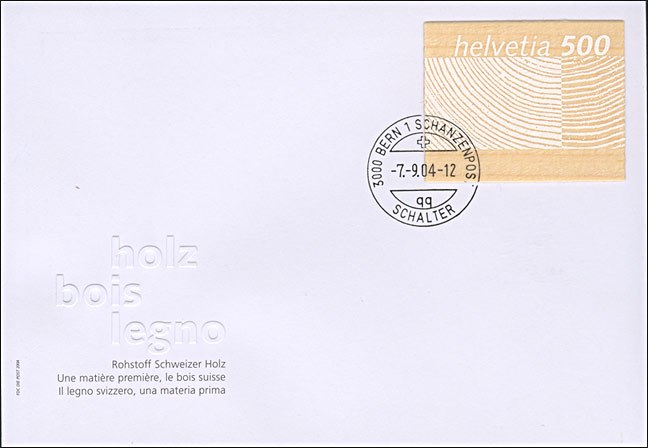
The second place where a cancellation of these stamps was made possible (and where I have also asked for postmarking) was the counter (Schalter) of the central post office in Berne. Please note the difficulties that they had to properly postmark the stamp, the last "T" in the word Schanzenpost (the name of the post office) being practically invisible.
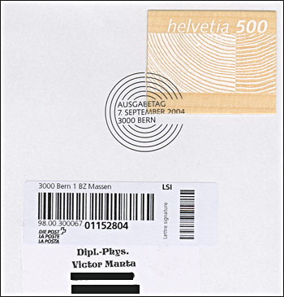
The reason why the number of postmarking places was limited to just three was as well the unusual (for a stamp) thickness of about 0.7 mm, as its material, for which a special canceling ink was needed (and finally found). See above a relevant fragment of an envelope that I have sent for postmarking to the Cancellation Service of the Swiss Post. This registered letter was postmarked with the First Day cancel, even if it wasn't sent on the issuing day (the 7th of November), but much later. Obviously, they had only one machine that could correctly postmark such a stamp, the first day one, so that this was the only solution at their disposal.
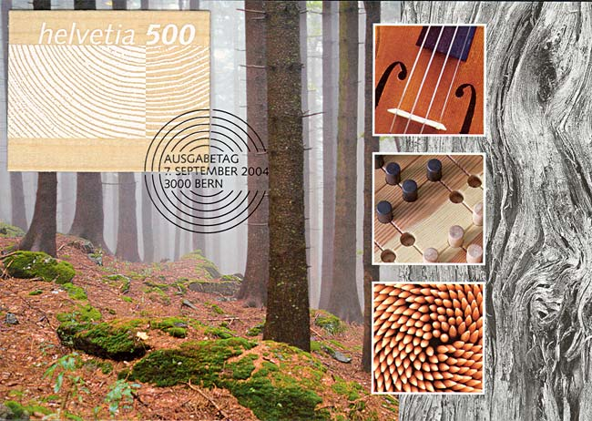
Above I show the standard maximum card that was proposed by the Swiss Post, that I have asked for postmarking by the already known First Day cancel.
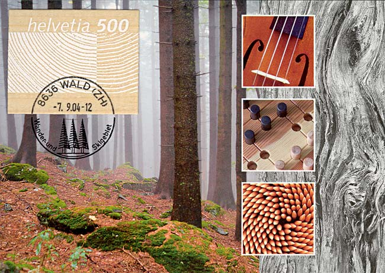
This is the same postcard that, thanks to my explicit demand, was postmarked at the post office Wald. It's a nice cancel, isn't it?, but the gap between the stamp and the card is obvious.
In spite of all these limitations, I find that this was an interesting approach, one that diversified a bit the not always attractive landscape of the modern issues proposed by the Swiss postal administration.
After: Focus on Stamps 3/2004.
Links:
- World's first embroidery stamp
- The chocolate stamp